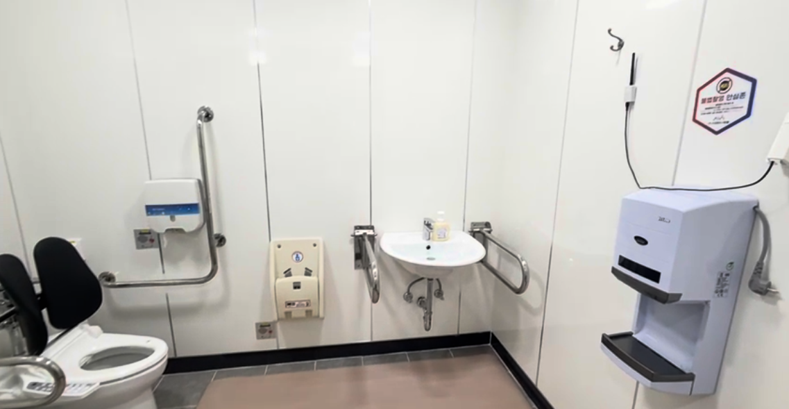

C
C STM32
STM32 ESP32
ESP32 Linux
Linux MQTT
MQTT ROS2
ROS2 OpenCV
OpenCV Raspberry Pi
Raspberry Pi Jetson
Jetson Python
Python PyTorch
PyTorch YOLO
YOLO Android
Android FastAPI
FastAPI Git
Git Notion
Notion Docker
Docker GitHub
GitHub

개요
카메라 없이 Wi-Fi 신호의 미세한 변화(CSI)를 분석해 실내 낙상을 감지하는 시스템입니다. 사생활 침해 없이 고령자의 낙상을 감지하는 것을 목표로, ESP32로 수집한 신호를 딥러닝 모델로 판별하고 결과를 Android 앱으로 전달해 보호자가 즉시 확인할 수 있도록 구현했습니다.
기간 · 인원
- 2026.03 ~ 2026.08
- 이다연 (APP·EM) · 염세현 (BE·EM) · 이지우 (AI)
주요 기능
- 카메라 없이 Wi-Fi CSI로 실내 낙상을 실시간 감지
- 낙상 감지 시 보호자 앱으로 즉시 알림 전송
- 기기 등록·선택 및 상태 확인
- ESP32 → 서버 → 앱으로 이어지는 실시간 데이터 연동
맡은 역할
ESP32 STA 펌웨어 개발
- Wi-Fi STA 모드로 공유기에 접속해 ESP32에서 CSI(Channel State Information) 신호를 실시간 수집
- 수집한 CSI 원신호(64개 서브캐리어)를 서버로 전송하는 통신 로직 구현
- 연결 유지·재연결 처리로 신호가 끊기지 않도록 전송 흐름을 안정화
- 헤더(.h)/소스(.c) 분리, @brief·@param 등 Doxygen 스타일 주석으로 함수 문서화
- 함수·변수 역할과 코드 구조를 정리하며 펌웨어 기본기 확립
Android 앱 개발
- 실시간 낙상 감지 결과 표시 및 보호자 알림 화면 구현
- 기기 등록·선택·상태 확인 화면 구현
- 서버(MQTT)로 수신한 위험 상태를 앱 UI에 실시간 반영